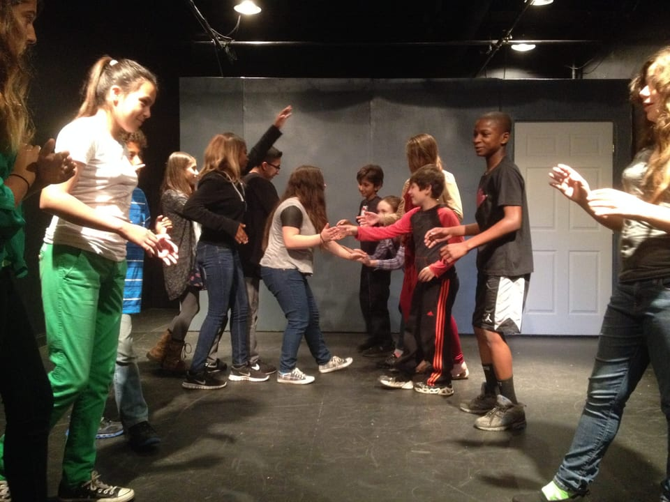
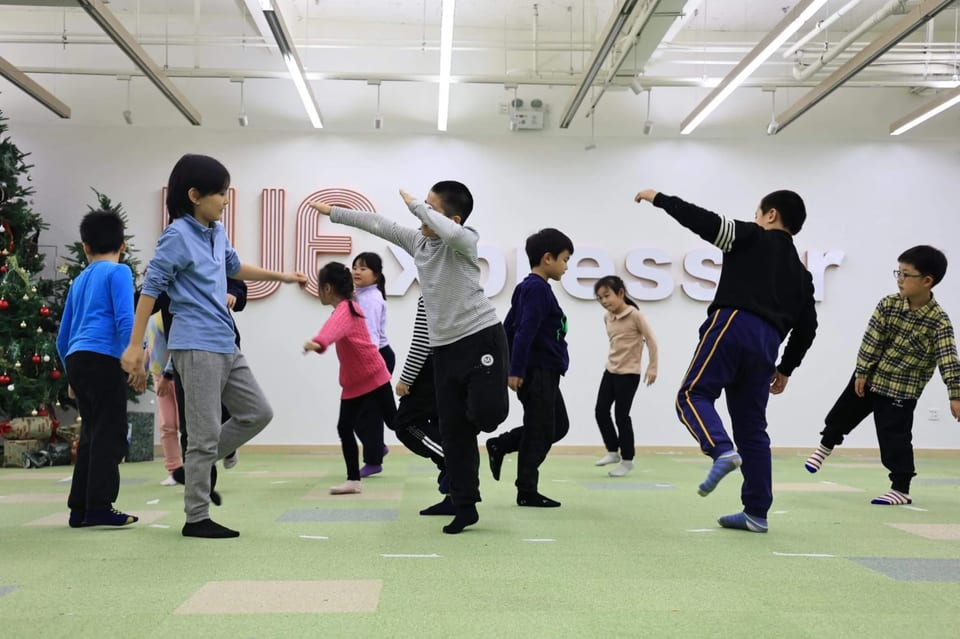
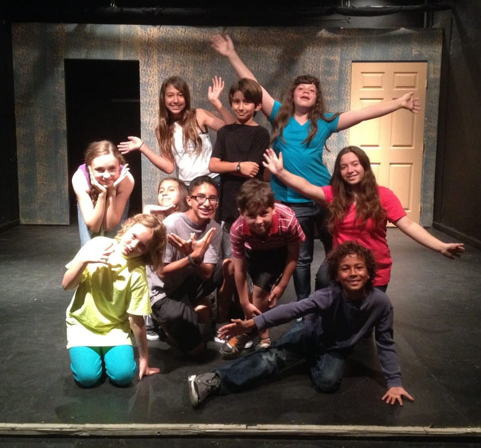

Developmental Improvisation, the system
Every value below is read from css/tokens.css when this page is built, and every control is the page's own class, so this guide cannot describe something the page does not do. The decisions behind it, and which of them are locked, are in docs/decisions.md; the reasons are in docs/BUILD-LOG.md.
The rules, in one place
- A quiet room, and the photographs and the logo as its only colour. Everything else is the ink on white or on Apple's grey; no hue in the chrome, no coloured text, no gradient but the logo's glint.
- Light only. One ground, one ink, both from the same cool family.
- Two weights, 400 and 600. Hierarchy is size and weight; every word is in the ink.
- No shadows, anywhere. Lines in three places only: the header's 1px edge, the hairline over the footer, the 1px ring inside an outlined control.
- Sections alternate white and grey, edge to edge, with no gap: the change of ground is the break, and no two in a row share one.
- One action a screen. No section shows more than six things to press.
Colour
Grounds
#FFFFFFthe page
#F5F5F7every other section, edge to edge
#F2F2F5a field on white
#FFFFFFa field or a control on a grey band
#E8E8EEa photograph's frame before it arrives
Ink and lines
#15141Devery word on the page, and the focus ring
#6A687Da field's placeholder, nothing else
rgba(21,20,29,.10)the hairline over the footer
rgba(21,20,29,.12)the 1px ring inside an outlined control
rgba(21,20,29,.22)that ring under the pointer
rgba(21,20,29,.48)behind a dialog
The logo's own palette, its only colour
#00BBF2#E8B631#E550DF#8273FF#EC7F4C#30CD80#F080B8#E8B631Type
Inter, one variable file, 400 and 600. Inter switches to its display design at 32px and up by itself. Tracking tightens as the size grows and is never set by hand below the headline sizes.
Space
A 4px grid. Every section has --section-y clamp(80px, 9vw, 140px) above and below it; the column is calc(1200px + 2 * var(--gutter)) with a gutter of clamp(20px, 3.4vw, 64px).
Corners
Four, and each has a job. Every corner is a superellipse where the browser can draw one (corner-shape: squircle); a circle opts back out.
a frame on the film
a photograph, the film
a button, a field
one glyph
Press
Every control answers a press by shrinking, and the depth follows its size: a small thing has to go further to be seen at all. Press these.
Motion
A ladder for what happens, all on --ease-out cubic-bezier(0.22, 1, 0.36, 1). Hand-tuned and kept off the ladder: a section arriving (900ms fade, 1100ms rise), a photograph resolving over its placeholder (700ms), the curtain (900ms). What slides and turns, the strip and the ring, has no duration: it follows one shared angle, and under reduced motion it stands still.
100ms a press160ms arriving under the pointer, or focus240ms leaving it280ms a photograph settling, a spring back360ms a photograph closing back into its frame; a section arriving, under reduced motion500ms a dialog, the viewer, a photograph opening out of its frameControls
Buttons and the field
A light control over a photograph

The strip's pause and the film's play: white at rgba(255,255,255,.82) with an ink glyph, so it reads on the darkest and the brightest picture beneath it; solid under reduced transparency, ringed under increased contrast.
Photographs
A photograph fills its frame and opens out of it into the viewer. Its file is chosen for the width it is drawn at, its crop counted.



Left to right: a section's photograph (4:5, --r-lg), the ring's circle, the film (9:16, --r-lg). The strip's frames are 4:5 on the film base with a 2px corner.